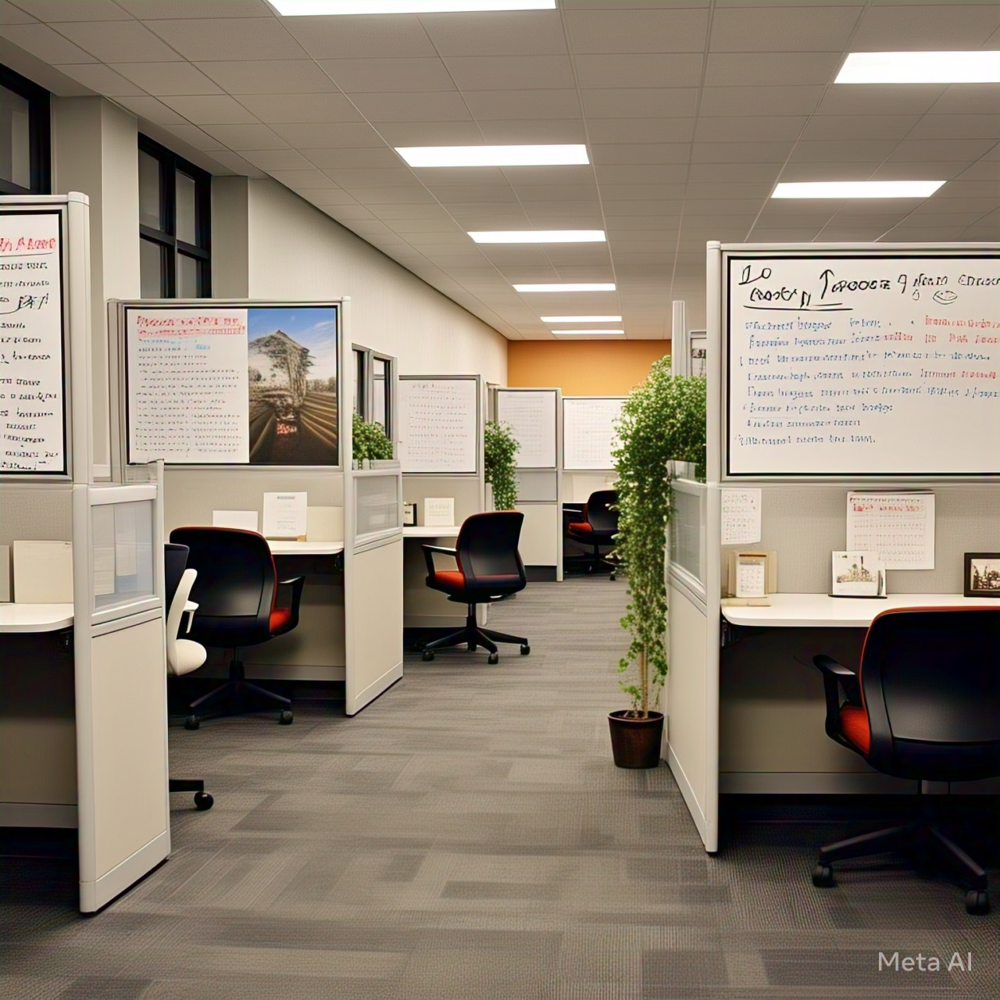

Bienvenido a Assistant Doctor
Transformamos el bienestar empresarial con soluciones innovadoras que conectan a los pacientes y mejoran la experiencia.
Tu salud, nuestra prioridad
En Assistant Doctor, ofrecemos un monitoreo multifuncional para el bienestar empresarial, facilitando el contacto y apoyo con el paciente.
Mejora tus proyectos creativos
con nuestra aplicación de bienestar empresarial
Nuestra aplicación ofrece herramientas intuitivas y características para mejorar el bienestar de tu empresa. ¡Obtén la aplicación y comienza a optimizar hoy!
- ✔Satisfacción del Cliente
- ✔Incremento en Eficiencia
- ✔Conexión Continua
- ✔Apoyo al Paciente
Características Clave de Assistant Doctor
Innovación en cada paso por tu bienestar empresarial
❤
Monitoreo en Tiempo Real
Acordar a los datos de salud actualizado al instante.
💼
Interacción Personalizada/
📈
Analisis Avanzado
Obtén insights detalles detallado para mejorar la salud corporativa.

Ventajas del Monitor Multifuncional
Continuidad
Lee constantemente sus signos vitales
98%
En precisión de los datos
"Assistant Doctor va a revolucionar nuestra forma de gestionar el bienestar empresarial"
"La facilidad de uso y la atención al cliente son excepcionales"
"Una herramienta imprescindible para cualquier empresa comprometida con el bienestar"
Nuestro camino hacia el futuro
Descubre los planes y objetivos que guian nuestro desarrollo
FASE 1
Investigación y Desarrollo
🔎Análisis de necesidades
⚙️ Desarrollo de prototipos
👥 Pruebas de usuario
FASE 2
Implementación
✈️ Despliegue de soluciones
🟥 Integración de sistemas
FASE 3
Crecimiento y Soporte
♾️ Actualizaciones continuas
🎧Soporte técnico
Nuestras habilidades
♔
Atención al Cliente
Proporcionamos un servicio excepcional adaptado a cada cliente.
📲
Innovación Continua
Nos mantenemos a la vanguardia con soluciones creativas.
🤖
Integración Tecnológica
Implementamos tecnología avanzada para mejorar la salud corporativa.
Conecta con las mejores empresas del mundo
- Empresa Alpha
- Empresa Beta
- Empresa Gamma
- Empresa Delta